梅吉写真ライブラリー [梅吉]
「ハートフル」をキーワードに梅吉の写真ライブラリーを見返しました。
う〜〜〜〜ん・・・・・・目につくのは
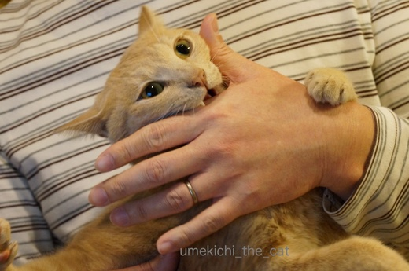
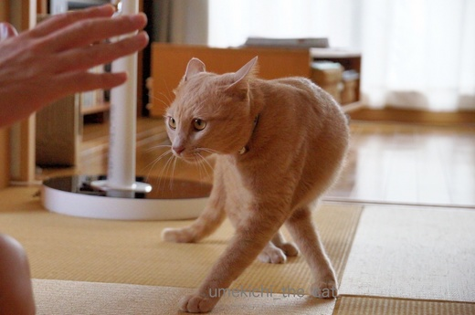
何かにかじりついている、もしくは、かじり付こうとしている写真や
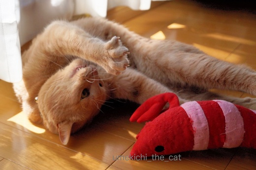
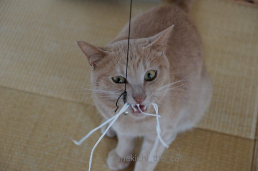
恐ろしげな顔でおもちゃと格闘する写真や
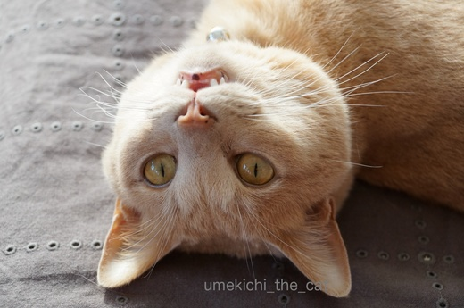
（仰向けなんです）
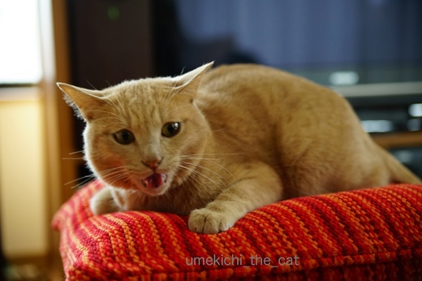
ブラシを拒否して怒っている写真とか
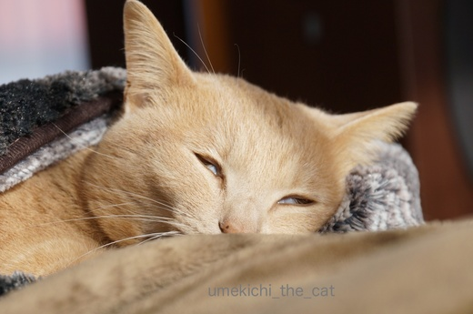
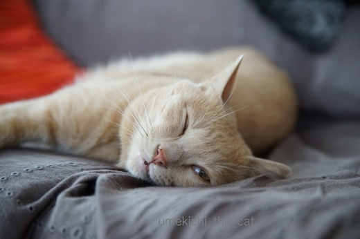
白目気味に寝ている写真とか・・・・・そんなんばっかりなんですよ( ･̆ˍ･̆ )
でも、昨日猫の浮世絵を見に行ったのですが書かれている猫みんな結構怖い顔。
現代の写真の様に過度の可愛さを求めたものよりも
「日常の猫ってこんな顔してるよね」と好印象でした。
梅吉がそうだからと肩入れした感想かも知れませんけれどね＾＾
梅吉さんの写真はこのままで良いってことですよね？梅吉さん。
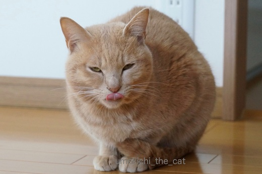
![[猫]](https://blog.ss-blog.jp/_images_e/101.gif) せやで。
せやで。
最後は悪顔で〆てもらいました。
 ↑ガブッと一押し↑
↑ガブッと一押し↑
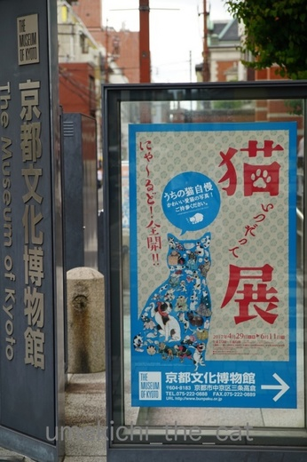
ようやく行って来ました「いつだって猫展」。
展示数も多くてたっぷり楽しんで来ました。
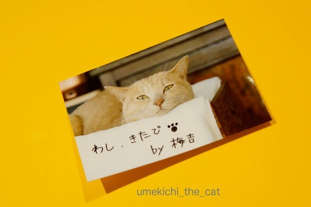
ちゃんと足跡も残して来ました。
「この猫ちょーかわいい！！」とか言われているのはやっぱりきゅるんと可愛い写真だったなー。
いいんだもん、よこしまな目の梅吉で。
ランチは権太呂さんの親子丼と衣笠うどんを二人でシェア。
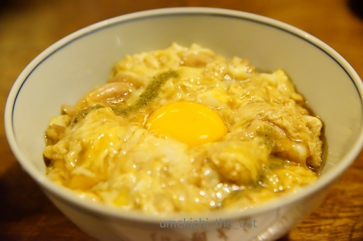
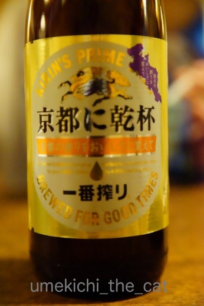
ビールを頼んだらこんな一番搾りが。
缶ビールは「○○づくり」ですが瓶ビールはこんなご当地ビールなのね。
う〜〜〜〜ん・・・・・・目につくのは
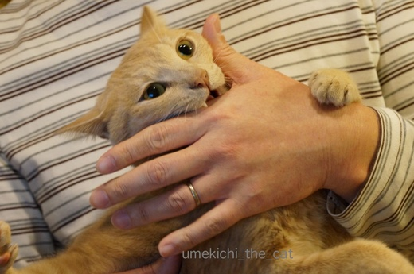
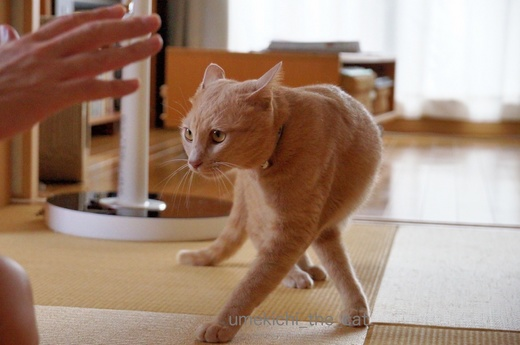
何かにかじりついている、もしくは、かじり付こうとしている写真や
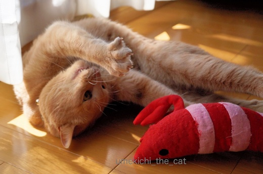
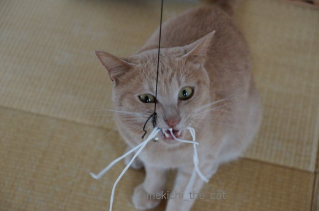
恐ろしげな顔でおもちゃと格闘する写真や
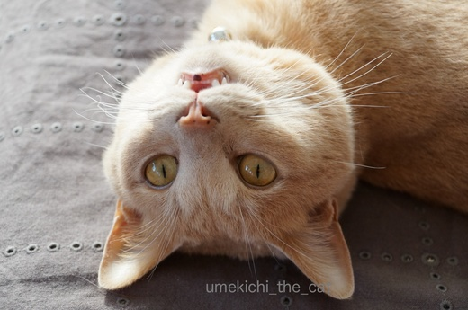
（仰向けなんです）
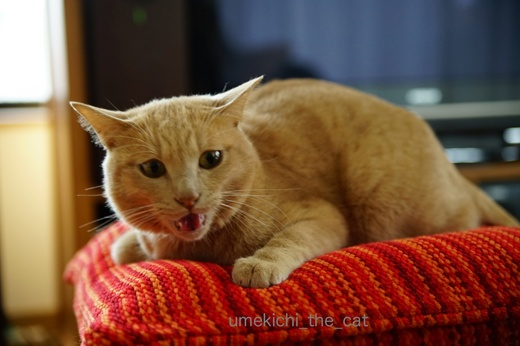
ブラシを拒否して怒っている写真とか
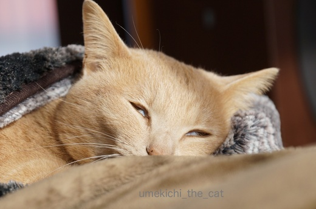
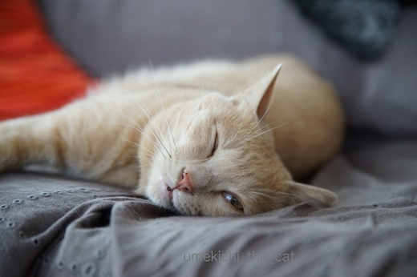
白目気味に寝ている写真とか・・・・・そんなんばっかりなんですよ( ･̆ˍ･̆ )
でも、昨日猫の浮世絵を見に行ったのですが書かれている猫みんな結構怖い顔。
現代の写真の様に過度の可愛さを求めたものよりも
「日常の猫ってこんな顔してるよね」と好印象でした。
梅吉がそうだからと肩入れした感想かも知れませんけれどね＾＾
梅吉さんの写真はこのままで良いってことですよね？梅吉さん。
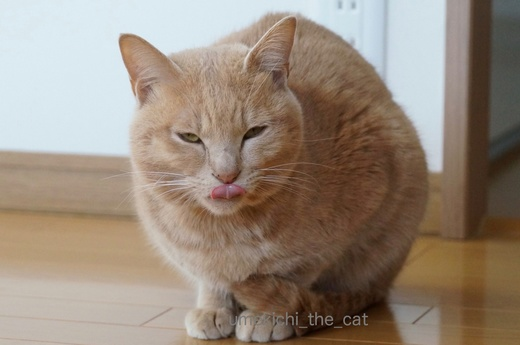
最後は悪顔で〆てもらいました。
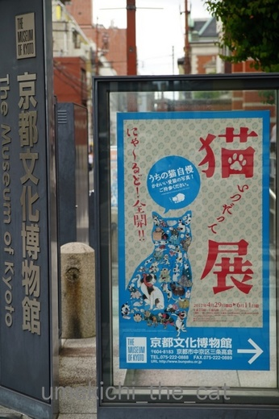
ようやく行って来ました「いつだって猫展」。
展示数も多くてたっぷり楽しんで来ました。
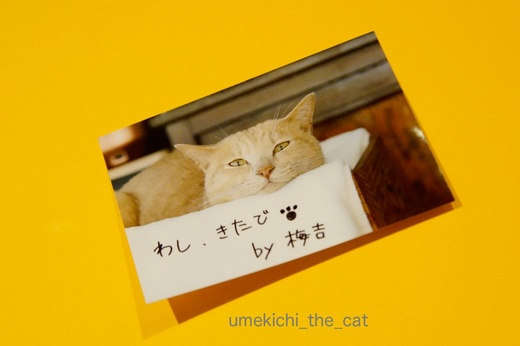
ちゃんと足跡も残して来ました。
「この猫ちょーかわいい！！」とか言われているのはやっぱりきゅるんと可愛い写真だったなー。
いいんだもん、よこしまな目の梅吉で。
ランチは権太呂さんの親子丼と衣笠うどんを二人でシェア。
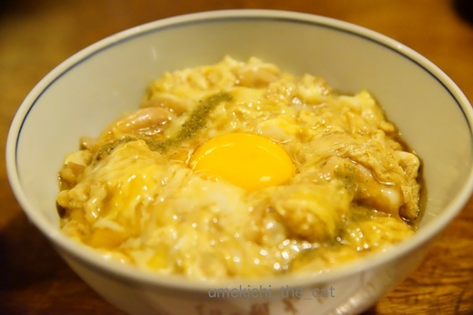
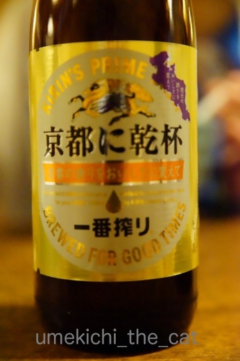
ビールを頼んだらこんな一番搾りが。
缶ビールは「○○づくり」ですが瓶ビールはこんなご当地ビールなのね。

カフェオレ色の梅吉

梅吉 2023年8月10日 永眠


梅吉と出会った譲渡会

犬猫の理由なき殺処分ゼロ
妄想広告
UMEKICHI 光

爆発的に早い！
時々攻撃的！
Thanks to Mr.Boss365
爆発的に早い！
時々攻撃的！
Thanks to Mr.Boss365

「おかぁちゃん、いじめんといてんかぁ〜」の
梅吉さんの真剣勝負がおかしいですね。
「せやで」の悪顔なんて最高です。
『わし、きたで』by 梅吉で、京都に乾杯してきたのですね。
by kiki (2017-06-04 15:57)
梅吉さん、生粋の関西人？らしくて素晴しいです！
ただ可愛いだけじゃなく、格闘系もお笑いもこなせるなんて、サスガです(^o^)
ウチのにゃんズは、飼い主に似て(!)芸も何もないですからねえ...(-＿-)ｳｰﾑ
by ひでぷに (2017-06-04 18:20)
ハートフル、なかなか難しいお題ですにゃー。
梅吉君をみているだけでHP(ハート)が満タン(フル)になりますよ、的な？
どの写真も梅吉君らしくていいです。キリッとした顔から、梅吉君がいやがりそうな白目写真まで。可愛い顔が可愛くてアタリマエ、真の猫好きとはたまに見せるド変態顔にバーニングマンダラー♬なものなのであーる、と、ちょっと偉そうに言ってみたいお年頃です(テヘ
by BillK-ko (2017-06-04 18:56)
タイトルにもある白目写真もっと見たいんですけどー。
私は仰向けの、4本揃った真っ白なキバと金色のお目目の写真が好みです。
BillK-koさんの仰るように、いわゆる童顔的なあどけない可愛さに惹かれるのはシロウトですっ! 私たちクロウトは味のあるユニークな梅吉さんが良いんです。
by zombiekong (2017-06-04 19:27)
どのお顔も可愛くてしかたがありません♪
普通にしている姿ももちろん可愛いのですが
私も白目で寝ている時など
今がシャッターチャンスとばかりに撮りまくります（笑
愛おしく感じます(#^.^#)
by きぃ (2017-06-04 20:11)
私は白目で眠る梅吉くん好きだなぁ~(*^^*)
by palpal (2017-06-04 20:28)
ニャンコカレンダーに満載のお目目くりくり子猫ちゃんもカワイイけれど、猫の日常のかわいさはそんなもんじゃないですもんね(*^▽^*)
仰向け牙チョロ見え、大好き♪
ウチのもブラシ持って追い掛け回すとイカ耳で「フ～ッ」というのですがそれがまた愛らしくて思わず抱きしめてまた蹴飛ばされてます^^;
by ゆきち (2017-06-04 20:44)
どれもいい表情ですね♪ ^^)
私もやっぱり、白目の「落ちてる」梅吉さんがいいなあ。^^;
「京都に乾杯」ビール、初めて見ました。
そういえば、京都にキリンビール工場があった頃
1497（だったかな？）っていう地ビールを飲んだことあります。
by yes_hama (2017-06-04 21:58)
逆にこんなお顔猫を飼っていない我が家などでは外猫さんしか見ないのでレアな顔だと思いますよ。これは飼い主さんの特権ですよ～
by みぃにゃん (2017-06-04 22:02)
人に媚びない、梅吉さんのリアルな日常も
ステキです。これでいいのだ～！（笑）
by うっかりくま (2017-06-04 23:18)
鋭い目、しなやかな攻撃姿勢、容赦ない牙、そして‥白目むいてる～？！
最高ですよ＾梅吉っつぁん♪
野性味とユニークさと‥で超かわいいです＾＾
by sana (2017-06-05 00:34)
色んな表情、可愛いですねヾ(*´∀｀*)ﾉ
寝顔にはケラケラ笑っちゃいましたｗｗ
by sumi-cyan (2017-06-05 02:44)
わかります〜=(^.^)=
ついつい変顔って愛おしくて撮っちゃうんですよねぇ(⌒-⌒; )
梅吉さんの変顔どれも可愛い♪( ´▽｀)
マラソン応援、ありがとうございました(_ _)
皆様のおかげで目標達成出来ました*\(^o^)/*
by ニッキー (2017-06-05 08:58)
どれも可愛いですよ。
浮世絵はもっと怖いですよ(´艸｀＊)
梅吉さんはどんな顔していても可愛い＾＾
by muku (2017-06-05 09:54)
いいのいいの！これぞ猫って写真ですよー^^
あー、やっぱり白目に萌えるわｗｗｗ
by リュカ (2017-06-05 10:44)
いやいや、私は好きですよ、梅吉さんの浮世絵顔。
アタチ可愛いでちょ～？っていうネコさんよりもね
by じゅらまろ (2017-06-05 11:55)
梅吉さ～ん！ 可愛すぎるでしょーーー。
真剣な表情にも、ナチュラルなボケが入っててますね♪
クチビルの黒ポッチがまた、キュートです。
猫の浮世絵、いいですよね。
歌川国芳さんの猫又なんか笑えますし、粋な洒落がきいてますよね。
by morichan (2017-06-05 15:41)
ムフ、自然の感情を表情にできるって、本当に幸せ！
(≡^∇^≡)ﾆｬﾊﾊ
by Ginger (2017-06-06 13:27)
kikiさん＞フーッとかシャーッと怒っているのではなく
本当に「いじめんといてんかぁ〜」と言っているようなあの顔
お気に入りの一枚です＾＾
京都に行った日はそんなに暑い日ではなかったのですが
昼から美味しくビールを乾杯して来ましたよ〜。
ひでぷにさん＞あはは＾＾
梅吉は飼い主に似ず（！）多芸かもしれません(≧艸≦*)
今回の写真にはありませんがお茶（またたび茶）もいけますから！！
BillK-koさん＞だれ〜？だれ？あ！アイコン変わってる〜！！
マーさんのねむねむ（？）な表情いいですね＾＾
私もこーゆー表情に「きゅんっ」とハートがフルになりますですよ(^_－)☆
梅吉が白目公開を嫌がっているとはとても思えませんっ！！
だって、白目連発しますから！むしろ「うつしてや〜」と思ってる・・・^^;
zombiekongさん＞zombiekongさんからの力強いお言葉
ありがとうございます〜。
そうそう、私たちはもう普通の可愛さでは満足できなくなってるんですよね！
より強い刺激が欲しくなる・・・・猫ってイケない薬みたいだわっ(≧艸≦*)
きぃさん＞うれしい！きぃさんもマニアだわ〜(≧▽≦)
普通じゃない特別な表情（特に変顔）を
皆さんに見ていただけるのもまた嬉しいですよね♪
梅吉もLeaちゃんに負けないよう白目頑張らなきゃ！！
palpalさん＞暑くなって来ると白目率が高まりますよ！
これからの季節、乞うご期待です＾＾
ゆきちさん＞イカ耳で「フ〜ッ」？きゃ〜！言われてみたい(≧▽≦)
蹴飛ばされてみたいＯ(≧▽≦)Ｏ
だんだん、フツーでは満足できなくなって来ている猫変態です^^;
yes_hamaさん＞白目に1票ですか！ありがとうございま〜す＾＾
調子に乗って今日の更新も白目ですww
京都にキリンビールの工場があったのですね！
工場で作ったビールを工場で飲む、おいしそうですね(^o^)
みぃにゃんさん＞そうですよね〜＾＾外猫さんは白目むいたりしてないですよねww
飼い主の特権これからも楽しみたいと思います！！
うっかりくまさん＞おお！励ましのお言葉ありがとうございます。
今後もリアルすぎる梅吉の日常をご覧くださいませ〜。
臨場感重視でお伝えしたいと思っております＾＾
by ちぃ (2017-06-06 16:02)
sanaさん＞白目、得意技なんですよ〜＾＾
なぜか夏に頻度が高くなります。
日本の夏、白眼の夏！なんて〜(≧艸≦*)
sumi-cyanさん＞可愛い写真は少ないですが
変顔になら自信あり！ですww
ニッキーさん＞100㎞マラソンお疲れさまでしたm(__)m
梅吉ライブラリーというか変顔ライブラリーとも言えそうです・・・^^;
もっとも変顔の時こそ「シャッターチャンス！」とカメラを構える
飼い主の嗜好が強いのですけれどww
mukuさん＞まぁ＾＾かわいいなんてありがとうございます。
が、変なスイッチ入ってる時の梅吉の目は
浮世絵顔負けの怖さなんですよ〜。
私のカメラの腕ではまだその表情を捉えきれていないなぁ。
リュカさん＞あ！白目好きね＾＾
梅吉はあおくんみたいにから目線でびしーっと決められないから
白目で勝負するわーww
じゅらまろさん＞ありがとうございます＾＾
誰かが梅吉の絵を描いてくださるなら迷わず「浮世絵」
を選んじゃいそうですww
morichanさん＞梅吉は怖い顔をしている時も
「凶暴」というよりは「アホ爆発」って感じなんです^^;
そのアホボケな感じが写真でmorichanさんに伝わったのでしょうか。
うれしいでーす(〃▽〃)
クチビルのポッチよくお気づきになりましたね！
梅吉のお茶目感をアップしてくれる
チャームポイントの一つだと思ってます＾＾（親バカ）
Gingerさん＞梅吉にはこのまま天衣無縫のアホを貫いて欲しいと
願っています(〃▽〃)
思うままに生きられるようちゃんと環境整えてあげなくっちゃ！
by ちぃ (2017-06-06 17:55)